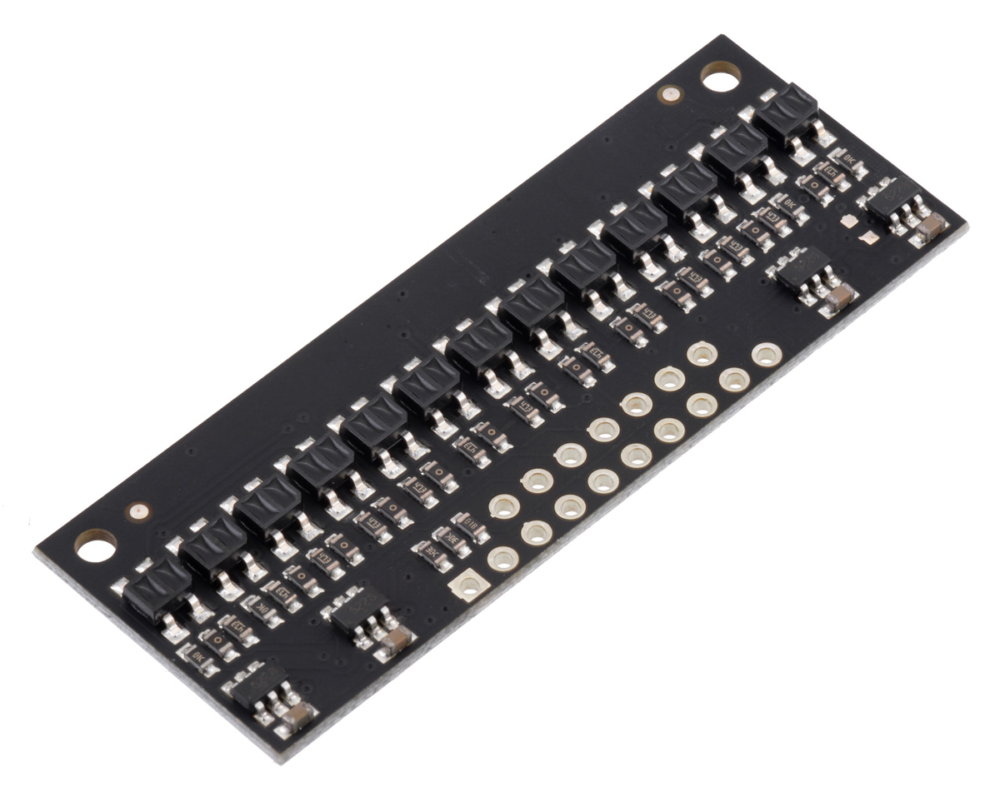
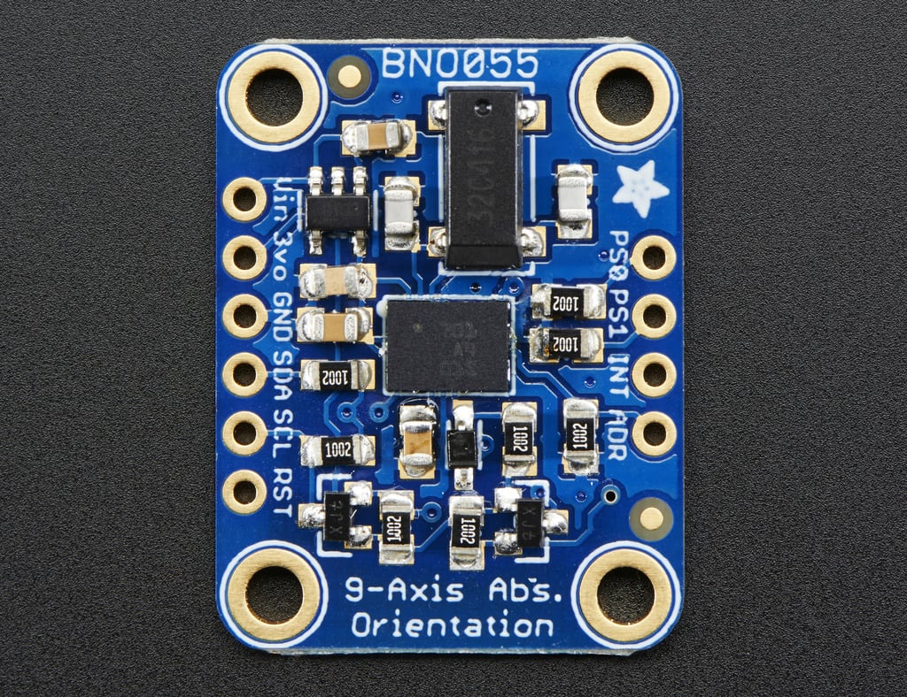

Hardware¶
Components¶
Item |
Quantity |
Notes |
|---|---|---|
1 |
A differential-drive mobile robot platform. |
|
1 |
Provides a third point of contact for the robot. |
|
1 |
A single-pole, double-throw momentary switch used as a tactile bump sensor for physical collisions. |
|
1 |
A 13-channel array of IR LED/phototransistor pairs with 4mm length, used for precise line detection and following. |
|
2 |
Gearmotors with encoders pre-installed, providing feedback for precise motor control |
|
1 |
9-DOF absolute orientation sensor |
|
1 |
Microcontroller Dev Board |
Romi¶
Romi is a small differential drive robot that uses two wheels powered by DC motors with encoders. Romi has a Shoe of Brian and Nucleo-L476RG along with attached components like a bump sensor, QTR sensor, and IMU. The plastic chassis is lightweight allowing easier configuration and navigation. The two DC motors are connected to a gearbox for proper torque, controlled by pulse width modulation signals, allowing for variable speed control. The encoders connected to the motors allow for a closed feedback loop, so we can implement motion tracking and autonomous movement. The motor driver controls the voltage and current to each motor, allowing for bidirectional movement and speed control.
// add motor classification stuff
STM-32 Nucleo¶
Our Romi uses a STM32 Nucleo (particularly the NUCLEO-L476RG) as its microcontroller. The board has an ARM processor, various GPIO pins, and interfaces for I2C, SPI, and UART. The Nucleo allows for real time data processing, sensor integration and motor control through MicroPython.
QTR Sensor¶
The QTR sensor has an array of infrared reflectance sensor for line following, consisting of an IR LED and phototransistor to detect reflectance of the surface it is pointed at. White surfaces return high readings, while black surfaces return low readings. This sensor helps ROMI implement PID line following, adjusting motor speeds based on intensity of reflected light to the sensor.
{kind=link}
Image used from pololu.com.
{kind=link}
IMU¶
We use an inertial measurement unit to track acceleration, angular velocity, and magnetic field heading. Romi uses a BNO055 from adafruit which is a 9-DOF absolute orientation sensor using an accelerometer, gyroscope and a magnetometer. This allows us to track orientation, follow angles relative to north, and any environmental disturbances. We use I2C to communicate between our microcontroller and the IMU.
{kind=link}
Image used from adafruit.com.
Bump Sensor¶
The bump sensor uses a gate switch to detect physical collisions in the robot’s path. We integrated the sensor using a 3D printed part. When the bump sensor is activated, it sends a signal to the microcontroller, which when then have the robot react to its situation. In the course, this meant the robot would reverse before going around the wall. This adds another sense to our robot which is essential to navigate the final course.
{kind=link}